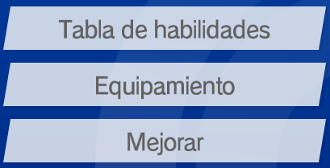
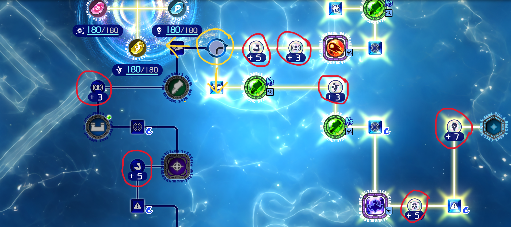
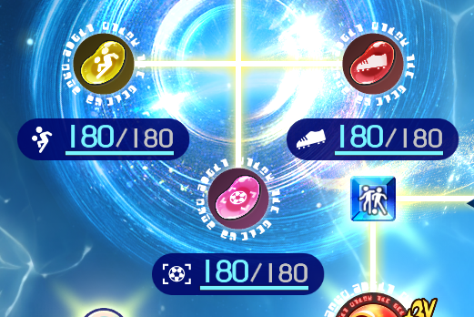
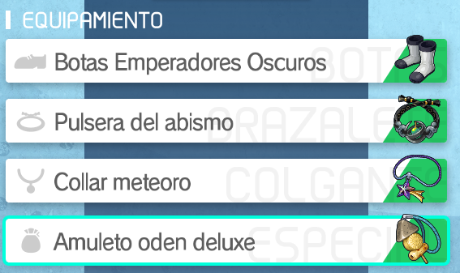
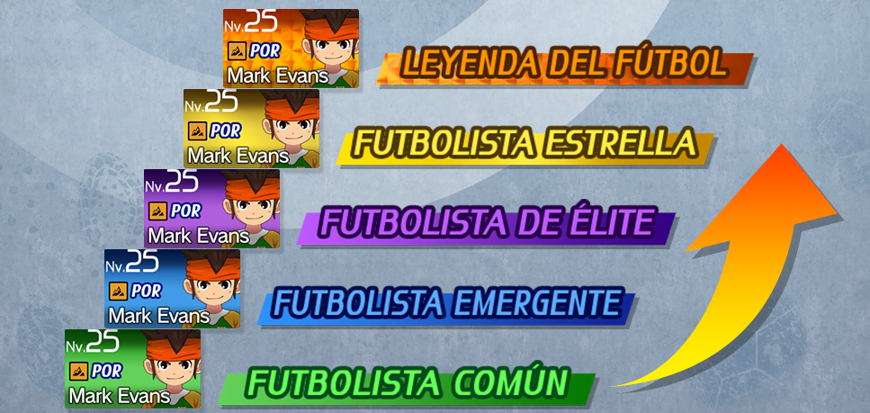

ESTADÍSTICAS
Al ser Inazuma Eleven un RPG, hay estadísticas presentes en todo el juego que afectan la efectividad de ciertos aspectos en los duelos para decidir quien es el mejor.
-4 Estadísticas en mediocampistas
-1 Conceptos
Cada jugador cuenta con 7 estadísticas que afectan de diferente medida a diferentes aspectos del juego.

Cada una de estas tiene efectos diferentes sobre ciertos áreas del juego lo que hace que sean más o menos importantes para ciertos casos. Lo que viene ahora es largo, voy a desarrollar como afecta cada estadística a cada cosa en detalle, pero después explicaré qué estadística importa por posición para evitar quebraderos de cabeza
Potencia
esta estadística afecta a la potencia de tiro en su totalidad y a los focos ofensivos en la mitad.
Control
el control hace lo mismo que la potencia pero aumenta la potencia de tiro en su totalidad y los focos ofensivos también en su totalidad
Técnica
La técnica afecta a los focos aumentando el ataque de foco y la defensa de foco
Inteligencia
La inteligencia afecta a los focos aumentando la defensa de foco y a las disputas aumentando el AT y DF de disputa
Presión
La presión afecta a las dispustas Aumentando la defensa de disputa, a los muros aumentando su vida y al portero mejorando algo su PP
Físico
El físico afecta a los muros aumentando su vida, a las disputas aumentando el ataque de disputa y al portero mejorando bastante su PP
Agilidad
La agilidad afecta al foco mejorando algo la defensa de foco y al portero mejorando mucho su PP
-2 Modificar estadísticas
Cada jugador tiene diversas formas en las cuales puedes alterar sus estadísticas, es alterando sus estadísticas que puedes mejorar a los jugadores, especializarlos en la estadística que necesites o reconvertirlos a otras posiciones.

Tablero de habilidades
En el tablero de habilidades, el jugador progresará desbloqueando habilidades pasivas, mejoras de estadística
y pudiendo personalizarse en caso de no ser ídolo.
Los jugadores que no sean ídolos tienen la capacidad de elegir dos caminos en el tablero de habilidades
en los cuales se especializará más en una posición u otra, alterando sus posibles supertécnicas y las
estadísticas.
Por ejemplo, Nathan Swift tiene dos caminos, en uno prioriza la defensa mientras que en el otro tira
hacia ser un mediocampo, lo que le otorga estadísticas diferentes.

Judías
Las judías se obtienen a lo largo del juego y hay de siete tipos, cada uno de ellos representando una estadística.

Las judías se pueden usar para mejorar tres estadísticass de cada jugador, pudiendo añadir hasta 180 puntos a las mismas.

Equipamientos
Cada jugador tiene 4 espacios dedicados para diferentes equipamientos que le refuerzan las estadísticas. Cada equipamiento mejora en cierta cantidad ciertas estadísticas y cuanto más juegues más desbloquearás. Es vital entender la prioridad de las estadísticas para cada posición pues cada equipamiento mejora dos estadísticas.

Mejora
Los jugadores que no sean ídolos pueden ser mejorados de rareza. Esto es algo básico que todo el mundo debe hacer, pero al subirlos de rareza mejorarán sus estadísticas y habilidades pasivas. Se necesitan judías para esto y varían por posición, es posible hacer que utilicen otro tipo de judías de mejora gracias a cambiar el rol del jugador así que si en algunos casos no hay suficientes, igual hay suerte y cambian.

Ídolos
Los ídolos merecen una explicación a parte. Estos personajes son de una rareza superior y no todos pueden serlo. Los ídolos se obtienen como drop raro en los partidos de dificultad legendaria en el crónica, tirando en el universo de jugador, como canje en la tienda de espíritus y como drop raro en las cajas legendarias. Los ídolos tienen un tablero y rareza fijos, por lo que solo pueden ser mejorados por nivel, judías y equipamiento. Hay 3 colores de ídolo, cada color está asignado a dos posibles arquetipos de pasivas que puedan tener.
Ahora que ya he hablado de las estadísticas y de como modificarlas, voy a decir cuales son las estadísticas que considero importante priorizar para cada posición y situación.
-3 Estadísticas en delanteros
Con los delanteros obviamente queremos potencia de tiro y la capacidad de llegar a la portería rival.
-La primera estadística que queremos subir es el control ya que aumenta tanto el tiro como
el foco ofensivo.
-La segunda estadística que queremos subir es la potencia ya que aumenta el tiro y el foco,
pero el foco lo aumenta menos que el tiro así que es mejor priorizar el control.
-La tercera estadística que queremos subir es la técnica ya que aumenta ambos duelos de
foco, estos son más comunes que las disputas y creo que es prioritario poder ganar estos.
El punto de estas estadísticas es subir lo máximo posible el tiro y en lo posible el ataque de foco, ya que
los delanteros quieren tirar fuerte y poder hacerlo.
-4 Estadísticas en mediocampistas
Con los mediocampistas tenemos un caso complicado porque algunos mediocampistas podrían tomar un rol ofensivo
incluso llegando a tirar al encontrarse más arriba en la formación, mientras que en otros casos podrían
tomar un rol más defensivo al estar más abajo en la formación. Por ende voy a hacer
una separación entre ambos posibles roles.
Mediocampistas ofensivos
Para los mediocampistas ofensivos queremos la capacidad de regatear y de forma secundaria
el tiro, ya que por su posición es normal que acaben en el área enemiga o directamente los lleves a ellos
allí.
-La primera estadítica que queremos subir es el control ya que este nos aumenta el ataque
de foco y el tiro.
-La segunda estadística que queremos subir es la técnica ya que nos aumenta los focos. Es
interesante que el mediocampo pueda regatear mejor, por eso creo que es más importante que el tiro, siempre
tendremos delanteros para tirar.
-La tercera estadística que queremos subir es el tiro ya que este nos sube el tiro y algo
el ataque de foco.
En verdad los mediocampistas ofensivos son delanteros un poco más atrás, pero es importante priorizar algo el
ataque de foco ya que servirán para poder regatear.
Mediocampistas defensivos
Para los mediocampistas defensivos queremos la capacidad de ganar ambos focos, tanto
defensivos como ofensivos, ya que por su posición no será tan normal verlos en el área e igualmente,
tendremos delanteros para cubrir el tirar fuerte.
-La primera estadística que queremos subir es la técnica ya que nos mejora ambos focos.
-La segunda estadística que queremos subir es la inteligencia ya que nos mejora la defensa
de foco y las disputas.
-La tercera estadística depende. Podemos subir el control si queremos que el mediocampista
regatee o la agilidad para mejorar la defensa de foco. Esto depende de lo que priorices.
Los mediocampistas defensivos son un punto medio entre defensa y ataque, podrán regatear como defender los ataques del enemigo.
-5 Estadísticas en defensas
Con los defensas tenemos otro caso donde pueden ejercer dos roles diferentes debido a su posición. Algunos defensas pueden estar más adelantados
que el resto por lo cual terminan entrando en duelo no tan cerca del área lo que hace que no suelan acabar haciendo de muro en el área. En cambio
por lo general los defensas que se encuentren en el centro y más bajos llegarán bien al área para poder hacer de muro. Obviamente, va a haber separación entre ambos tipos.
Defensas de foco
No encuentro un nombre muy adecuado para estos. Para los defensas de foco queremos priorizar la defensa de foco ya que no harán tanto de muro y para eso ya tendremos a los defensas de muro.
-La primera estadística que queremos subir es la técnica para mejorar ambos focos.
-La segunda estadística que queremos subir es la inteligencia para mejorar los focos defensivos y las disputas.
-La tercera estadística que queremos subir es la agilidad para las mejoras de foco que otorga. En caso de que este defensa entre en área mejor poner presión aquí para mejorar los muros
Tened en cuenta que no esperamos que estos defensas vayan a entrar en el área para bloquear pero en algunos casos puede pasar, en el caso de mi equipo casi nunca entran así que le saco más partido a tenerlos simplemente en foco.
Defensas de muro
Para los defensas de muro queremos tener la máxima cantidad de vida posible en el muro para potencialmente detener un tiro o eliminar la mayoría de su potencia. En la mayoría de casos los defensas centrales serán los que hagan de muro.
-La primera estadística que queremos subir es la presión para aumentar la potencia de los muros y de las disputas defensivas
-La segunda estadística que queremos subir es el físico que también aumenta la potencia de los muros y de las disputas ofensivas
-La tercera estadística que queremos subir es la inteligencia para las mejoras de foco defensivo y disputas, pero también puedes subir la técnica si quieres mejorar ambos focos, pero la defensa es el lugar donde suelen pasar las disputas de normal.
-6 Estadísticas en porteros
En los porteros no hay complicación, queremos aumentar su PP y hay tres estadísticas que hacen eso.
-La primera estadística que queremos subir es la agilidad por ser la mejor mejora de PP
-La segunda estadística que queremos subir es el físico por ser la segunda mejor mejora de PP
-La tercera estadística que queremos subir es la presión por ser la tercera mejor y última mejora de PP
Ya está, no hay nada más que entender de los porteros, subir las estadísticas y tener buenos PP.